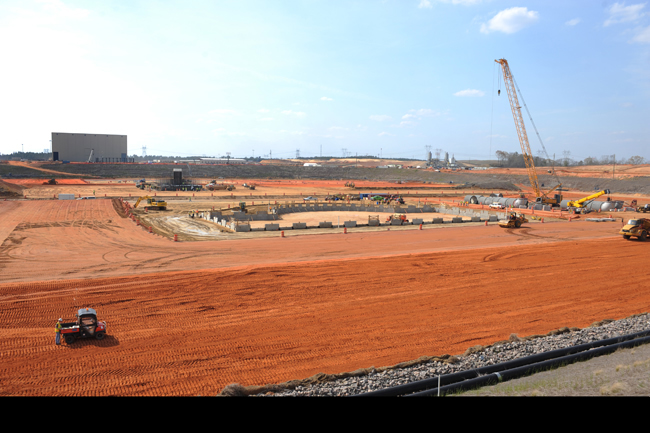

Civil construction & field engineering
I challenge principles, I don’t do rework, my standards are high, and I love when machines do my job.

- Current project
- Clifty Creek
- Place
- Madison, Indiana
- Role
- Lead Field Engineer

Field Note
FounderBuilding a workspace for construction teams to ask questions about drawings and specifications and verify answers against cited pages.

Venture Global CP2
Field Engineer managing Portland cement usage and stabilized-soil production.
- Scope
- $86 million
- Soil treated
- ~2.8M cubic yards
- Work
- Soil solidification
- Place
- Cameron Parish, Louisiana
85
field & CAD automations
Machines doing the job
Tools for reporting, quantity and equipment tracking, and time entry that reduce repetitive manual work.